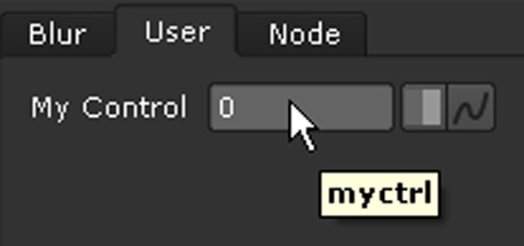
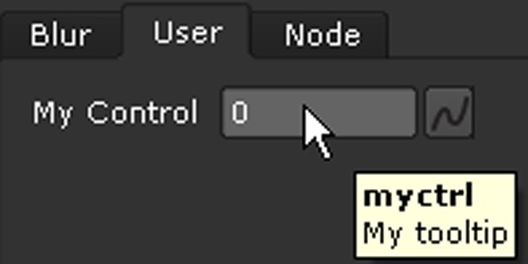
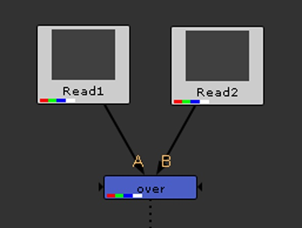
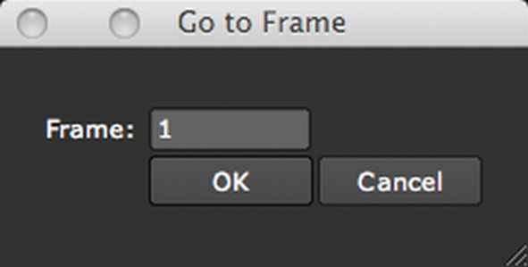

This chapter covers some basic examples to get you started with NUKE’s Python API.
As you will soon notice after trying to enter a few scripts yourself, the scripts are case-sensitive and only work if you enter them exactly right. There’s a bit of flexibility when it comes to quotation marks and spaces though. You can use both single and double quotes in your statements, and you don’t necessarily need to add a space before the brackets like we have done in the following examples.
Note
If you copy and paste example scripts from this user guide into a text editor, line indentations may not be preserved. If this is the case, correct the indentations manually.
This section explains how to create nodes and set their controls using Python.
When creating a node in the user interface such as in response to menu or toolbar action, you should use the syntax:
nuke.createNode( "nodename" )where nodename is the name of the node you want to create.
This syntax creates a new node in the user interface, hooks it up to any user-selected nodes in the Node Graph, and opens the node’s properties panel. In addition, any knob defaults are also set on the new node.
If you wanted to create a Blur node using this statement, you would enter:
nuke.createNode ("Blur")Note
You may encounter problems if you attempt to use the nuke.nodes.nodename(...) or nuke.createNode(...) statements to call a file that does exist in your [NUKE directory]/plugins folder but is not normally used to create a node or called directly. For example, entering nuke.nodes.drop() or nuke.createNode(“drop”) causes NUKE to try and call the drop.tcl file, but because no node called Drop exists, this may result in a crash. In general, any files in the plugins directory whose name does not start with a capital letter do not create nodes and should not be used with the nuke.nodes.nodename or nuke.createNode statements.
When creating a node for use in scripting, batch rendering, or some other background process, you should use the syntax:
nuke.nodes.nodename(...)where nodename is the name of the node you want to create.
This syntax creates a new node object. It does not connect the node to other nodes in the Node Graph, open the node’s properties panel, or run any knob defaults.
For example, to add a Blur node, enter:
nuke.nodes.Blur()You can only use this statement if you know the name of the node you want to create and can enter it explicitly in the statement.
Note that when you have a node selected and create a node this way, the new node is not automatically connected to the selected node. If you want the node to be connected, you can use the setInput() function, for instance:
nuke.nodes.Blur().setInput(0, nuke.selectedNode())Note
When using the nuke.nodes.nodename (...) statement to create nodes, you can add optional named arguments inside the parenthesis, separated by commas. You can use these arguments to set control values for the node, rename the node, set the node’s inputs, and (in the case of Read nodes) specify where to load an image from. Setting control values, renaming nodes, and creating Read nodes are described below, whereas setting a node’s inputs is discussed later in this chapter, under “Connecting Nodes and Setting Their Inputs”.
To set controls for a node at its creation time, use the following syntax:
nuke.nodes.nodename (control=value)
- where
- nodename is the name of the node you want to add
- control is the name of the control whose value you want to set
- value is the value you want to give to the control.
For example, if you wanted to create a Blur node and set its size control to 10, you would need to enter:
nuke.nodes.Blur(size=10)You can check the results in the Blur node’s properties panel, where the value in the size field should be set to 10.
To create a node and rename it, enter
nuke.nodes.nodename (name="newname")
- where
- nodename is the name of the node you want to add
- newname is the name that you want to give to the node.
For example, if you wanted to create a Camera node but call it Projection_Cam, you would enter:
nuke.nodes.Camera (name="Projection_Cam")To create a Read node pointing to a file, enter
nuke.nodes.Read (file="filepath\filename.ext")
- where
- filepathfilename.ext represents the path to the image you want to read in.
For example, if you wanted to read in myimage.cin from C:Temp, you would enter nuke.nodes.Read (file=”C:Tempmyimage.cin”).
Note
The format and other Read node controls may not be set up when using this syntax.
Since you are likely to want to play with the node after creating it, it makes sense to assign the node to a variable. Then, in your subsequent statements, you can use the variable to refer to the node.
To add a node and assign it to a variable, enter
variable=nuke.nodes.nodename (...)
- where
- variable represents any character or string of characters you want to use as the variable, and nodename the name of the node you want to create.
For example, you could enter:
b=nuke.nodes.Blur()Here, you are adding a Blur node and deciding to call it b in your subsequent statements. Of course, you could call it anything you like. If you were adding several Blur nodes to your script, you might want to call them b1, b2, and b3, for example. Now, say you created a Blur node and then decided to set its size control to 10. If you have assigned the node to a variable (for example, b), you can do this by entering:
b["size"].setValue(10)
Sometimes you need access to the node object for an existing node in the Node Graph.
To get access to a node via its name, use the following syntax:
nuke.toNode( "dagnodename" )
where dagnodename is the name of the node as it appears in the Node Graph. For example, if you had a node in the Node Graph called ‘Blur1’, you would use the following to get access to its node object:
myblurNode = nuke.toNode( 'Blur1' )
Sometimes you need access to the selected node(s) in the Node Graph.
To get the currently selected node, use the following:
selectedNode = nuke.selectedNode()
If several nodes are selected, NUKE returns the bottom-most node (the output node).
To access all the selected nodes, use:
selectedNodes = nuke.selectedNodes()
This gives you a list of all the nodes currently selected in the Node Graph.
We’ve now looked at setting control values for the existing controls of a node. But what should you do if you want to add a completely new control to a node? You need to use, for example, the following statements:
b = nuke.nodes.nodename (...)
k = nuke.Array_Knob("name", "label")
b.addKnob(k)
Let’s say you enter the following lines:
b = nuke.nodes.Blur ()
k = nuke.Array_Knob("myctrl", "My Control")
b.addKnob(k)
Using these statements, you add a Blur node and assign it to the variable b. You then create an input field control, decide to call it “myctrl” in references and “My Control” on the user interface, and assign the control to the variable k. Finally, you add the control (k) to the Blur node’s (b) properties panel.
If you wanted to create a slider control rather than an input field, you’d need to use the following statements (replacing Array_Knob with WH_Knob):
b = nuke.nodes.Blur ()
k = nuke.WH_Knob("myctrl", "My Control")
b.addKnob(k)
The following lines, instead, would produce a checkbox control:
b = nuke.nodes.Blur ()
k = nuke.Boolean_Knob("myctrl", "My Control")
b.addKnob(k)
Now you have a control, but it has no tooltip. Let’s add one. Enter the following statement:
k.setTooltip('My tooltip')
This adds a tool tip with the words My tooltip to the control created earlier and assigned to variable k.
To see the tooltip, you may need to close and reopen the node’s properties panel.
Use the showControlPanel() and hideControlPanel() functions to set whether you want the properties panel of a node to be open. For example, to show the properties panel of a new Blur node, you can enter:
n = nuke.toNode("Blur1")
n.showControlPanel()
By default, when creating a node with the user-interface nuke.createNode(..) syntax, the properties panel is open. To stop the properties panel appearing when creating a node, use the inpanel argument to createNode():
nuke.createNode( "Blur", inpanel = False )
This creates a Blur node without opening its properties panel.
You can use a script to set an input for a node.
Let’s imagine you want to add two Read nodes and a Merge node (in this case, an over node) to your node tree, and connect the Read nodes to the over node’s A and B inputs (numbers 1 and 0), like this:
You add the Read nodes and the over node and specify the over node’s inputs using, for example, the following statements:
r1 = nuke.nodes.Read (file="filepath\filename.ext")
r2 = nuke.nodes.Read (file="filepath\filename.ext")
m = nuke.nodes.Merge (inputs=[r2, r1])
where filepathfilename.ext represents the locations and names of the images you want to read in.
The last statement creates a Merge node and sets r2 (the second Read node) and r1 (the first Read node) as its inputs.
You can set default values for controls in any nodes that belong to the same class. After a default value is set, all controls with matching names default to this value. To set a default value, use the following statement:
nuke.knobDefault()
For example, if you want the size control on all Blur nodes to default to 20, you can use the following statement:
nuke.knobDefault("Blur.size", "20")
If you then wanted the last frame value of the frame range controls in the Project Settings to default to frame 200, you could use the following statement:
nuke.knobDefault("Root.last_frame", "200")
Note that you need to start the node class with a capital letter (for example, Root rather than root).
You can also use the knobDefault function to specify file-format-specific controls. These are controls that are added to Read, Write, and other file-format-dependent nodes when the file name is changed. To specify file-format-specific defaults, use the class name, followed by the file format extension and the control name, all separated by periods. For example:
nuke.knobDefault("Read.exr.compression", "2")
nuke.knobDefault("Read.exr.disable_mmap", "True")
Note
Knob defaults do not run by default for nodes created using the nuke.nodes.nodename() syntax. It is also important that you add these statements in your init.py file rather than menu.py. This ensures that they are set for command-line start-up as well as the graphical user interface (GUI). If these statements are not processed until menu.py (GUI start-up), then nodes created from the command line NUKE Python prompt (that is, starting as nuke -t) do not have the defaults applied.
Let’s imagine you’ve added a Write1 node into your script. Now, you want to render every other frame of the frames from 1 to 35.
To render a single Write node, enter:
nuke.execute ("name",start,end,incr)
In our example, you would enter:
nuke.execute ("Write1",1,35,2)
or:
nuke.execute ("Write1",start=1,end=35,incr=2)
Note
Instead of nuke.execute(name,start,end,incr), you can also use nuke.render (name,start,end,incr). Both statements perform the same action.
To render multiple Write nodes or ranges, enter:
nuke.executeMultiple ((variable,), ([start,end,incr],))
Nuke Studio’s player is NUKE’s default application for flipbooking (replacing Framecycler), but you can also use other applications for this, for example RV or Framecycler. In order to do so, you must implement a custom Python class.
Our example of how to do this is based on RV, which is also used in the flipbooking application example :doc:flipbook. Do the following:
Locate the flipbookingExample.py file and edit it to suit your circumstances, as it won’t work out of the box.
Save the modified file in your .nuke directory, naming it myflipbook.py, for example.
In your init.py (or menu.py) file, add the following line:
from myflipbook import *
For further details:, refer to the nukescripts.flipbooking.FlipbookApplication module in the Python Scripting documentation.
If necessary, you can have NUKE list all the controls in a node’s properties panel.
To list a node’s controls, enter:
for i in range (getNumKnobs()):
print knob (i).name()
Make sure you enter this compound statement on two separate lines and indent the second line.
For example, to list the controls of the Blur node you added earlier and assigned to variable b, you would enter:
for i in range (b.getNumKnobs()):
print b.knob (i).name()
As a result, NUKE lists the Blur node’s controls, displaying them in the output pane of the Script Editor.
To undo actions, enter:
nuke.undo()
To redo actions, enter:
nuke.redo()
To set a single frame range, use
nuke.FrameRange()This can only be used to store one frame range. You can set the frame range using, for example:
frange = nuke.FrameRange("1-100×2")The 1-100x2 syntax in the above statement sets the frame range to 1, 3, 5, 7, 9, 11...99. For more examples of the syntax that you can use, see Defining Frame Ranges in the Managing Scripts chapter of the Nuke Getting Started Guide.
If the frame range is not valid, an exception is thrown.
To iterate all frames in the frame range you defined above, you can use:
for f in frange: print fYou can also use the following methods:
- frange.setFirst(int) to set the first frame.
- frange.setLast(int) to set the last frame.
- frange.setIncrement(int) to set the increment.
- frange.first() to get the first frame.
- frange.last() to get the last frame.
- frange.increment() to get the increment.
- frange.frames() to get the number of frames in the frame range.
- frange.getFrame(int) to get the frame at a specific index.
- frange.isInRange(int) to return True if a frame is in the frame range, or False if it’s not.
- frange.minFrame() to return the smallest frame number in the frame range.
- frange.maxFrame() to return the largest frame number in the frame range.
- frange.stepFrame() to return the absolute increment between one frame and another. For example, if the real increment in the frame range was -3, this would return 3.
nuke.FrameRanges()
When using nuke.FrameRanges(), you can define the frame ranges in the following ways:
by listing the frames to include, for example:
franges = nuke.FrameRanges( [1, 2, 3, 6, 7, 8] )
by using a single string, for example:
franges = nuke.FrameRanges( "1-100 2-300×2" )
by using multiple strings, for example:
franges = nuke.FrameRanges( [ "1-10×1", "15-18×1 30-40×2" ] )
by using multiple nuke.FrameRange() calls, for example:
franges = nuke.FrameRanges( [ nuke.FrameRange(1,100,5), nuke.FrameRange(200,250,3)] )
For more examples of the syntax that you can use when defining frame ranges in NUKE, see Defining Frame Ranges in the Managing Scripts chapter of the Nuke Getting Started Guide.
To iterate all the frame ranges stored (in this case, using the franges variable), you can use:
for r in franges:
for f in r:
print f
This prints all the frames stored in the frame ranges.
The franges.compact() method can be used to optimize the way the stored frame ranges are expressed. Where possible, it removes duplicate frame ranges and expresses the stored frame ranges in a more compact way. Here are two examples:
Example 1:
franges1 = nuke.FrameRanges("10-7x-1 1-5×1 3-7×1")
franges1.compact()
print "Ranges1: " + franges
This returns the following: Ranges1: 1-10×1
Example 2:
franges2 = nuke.FrameRanges("10-7x-1 6-8×1 1-4×1 2-3×1")
franges2.compact()
print "Ranges2: " + franges2
This returns the following: Ranges2: 1-4×1 6-10×1
In NUKE, frame numbers in file names can be indicated using both hashes (#) and the printf style (%04d). Because of this, you may find it useful to use the nukescripts.replaceHashes() function to replace a sequence of hashes with the equivalent printf style formatting. This makes it easy to do frame number substitutions like the following:
filename = nukescripts.replaceHashes( node['file'].value() ) % nuke.frame()
To copy an animation curve from one node to another, for example, from Blur1 to Blur2, you can do the following:
# The following statements create the two Blur nodes (Blur1 and Blur2) and assign them to variables b1 and b2.
b1 = nuke.nodes.Blur()
b2 = nuke.nodes.Blur()
# The following assigns the size control of the Blur1 node to the variable k1.
k1 = b1['size']
# The following three statements animate the control assigned to k1. At frame 30, its value is set to 10. At frame 40, it’s set to 20.
k1.setAnimated()
k1.setValue(10, time = 30)
k1.setValue(20, time = 40)
# The following assigns the size control of the Blur2 node to the variable k2.
k2 = b2['size']
# The following copies the animation curve from k1 (size on Blur1) to k2 (size on Blur2).
k2.copyAnimations(k1.animations())
Sometimes, you may want to override the creation of a particular node. For example, NUKE includes two versions of the Merge node: Merge and Merge2. By default, Merge2 is inserted when you select Merge > Merge from the toolbar. However, if you’d prefer to use Merge, you can override the creation of the node so that NUKE creates the Merge node by default. To do so, follow these steps:
Create a file called menu.py in your plug-in path directory if one doesn’t already exist. For more information on plug-in path directories, see Loading Gizmos, NDK Plug-ins, and TCL scripts in the Configuring Nuke chapter of the Nuke User Guide.
Add the following entry:
class MyCustomNodes(): def __getattr__(self, args): if args == "Merge2": args = "Merge" return nuke.NodeConstructor(args) nuke.nodes = MyCustomNodes()You can also do the same using the nuke.createNode statement rather than the nuke.nodes.nodename statement. In this case, add the following entry instead of the entry described in step 2:
def createMyCustomNodes(node, knobs = "", inpanel = True): if node == "Merge2": node = "Merge" return nukeOriginalCreateNode(node = node, knobs = knobs, inpanel = inpanel) nuke.createNode = createMyCustomNodes
In the NUKE module, there is an object called env. This object gives you information about the particular NUKE environment you are running. You can access it in a dictionary form: nuke.env[“key”].
Currently, you can use the following statements to get the following information:
- nuke.env [“PluginExtension”]. This returns the file extension for plug-ins. The extension can be .dll on Windows, .so on Linux, and .dylib on Mac.
- nuke.env [“NukeVersionMajor”]. This returns the first number in the version number of NUKE. For example, if you were running NUKE 6.2v1, this would return 6.
- nuke.env [“NukeVersionMinor”]. This returns the second number in the version number of NUKE. For example, if you were running NUKE 6.2v1, this would return 2.
- nuke.env [“NukeVersionRelease”]. This returns the number after the letter v in the version number of NUKE. For example, if you were running NUKE 6.2v1, this would return 1.
- nuke.env [“NukeVersionPhase”]. This returns the last string in the version number of a NUKE beta. For example, if you were running NUKE 6.2v1b3, this would return b.
- nuke.env [“NukeVersionPhaseNumber”]. This returns the last number in the version number of a NUKE beta. For example, if you were running NUKE 6.2v1b3, this would return 3.
- nuke.env [“NukeVersionDate”]. This returns the date the version of NUKE you are running was built.
- nuke.env [“NukeVersionString”]. This returns the entire version number of NUKE.
- nuke.env [“threads”]. This returns the number of threads that are spawned when rendering.
- nuke.env [“numCPUs”]. This returns the number of detected CPUs.
- nuke.env [“gui”]. This returns True if you are using the graphical user interface of NUKE, and False if you are running NUKE from a terminal or command prompt.
- nuke.env [“ExecutablePath”]. This returns the full path to NUKE’s executable.
- nuke.env [“ple”]. This returns True if you are running the Personal Learning Edition of NUKE, and False if you are running the commercial version.
- nuke.env [“WIN32”]. This returns True if you are running NUKE on Windows, and False if you are not.
- nuke.env [“MACOS”]. This returns True if you are running NUKE on a Mac, and False if you are not.
- nuke.env[“LINUX”]. This returns True if you are running NUKE on Linux, and False if you are not.
- nuke.env [“64bit”]. This returns True if you are running a 64-bit NUKE.
To find out what’s in the NUKE “global environment”, you can also use the following statement:
print nuke.env
Some of the items are read-only (for example, ‘64-bit’ and ‘ple’), while others can be set (for example, ‘threads’).
To get a Python dictionary with all the metadata for a node (in this case, Read1), use:
nuke.toNode("Read1").metadata()
If you’re interested in the metadata at a particular frame or in a particular view, you can also specify these as optional arguments:
nuke.toNode("Read1").metadata("key", frame, "view")
For example, say you have loaded a stereo pair of images in one Read node. If you want to find out the file modification time at frame 93 in the left view, you can do the following:
nuke.toNode("Read1").metadata("input/mtime", 93, "left")
Similarly, the following gets you the file size at frame 95 in the right view:
nuke.toNode("Read1").metadata("input/filesize", 95, "right")
To get the value for a particular key in the metadata, use:
nuke.toNode("Read1").metadata("key")
For example, nuke.toNode(“Read1”).metadata(“input/ctime”) will return the value for the key called input/ctime.
You can create modal dialogs and non-modal panels. Modal dialogs pop up in their own window and will not let the user do anything outside the dialog until the dialog is closed. Non-modal panels float above everything else and can be docked into panes and saved with window layouts.
Dialogs and panels can be invoked at start-up or when the user selects a menu item that calls the panel.
To create a modal dialog with OK and Cancel buttons, read through the following instructions and have a look at the Python dialog example below.
Create a file called menu.py in your plug-in path directory if one doesn’t already exist. For more information on plug-in path directories, see Loading Gizmos, NDK Plug-ins, and TCL scripts in the Configuring Nuke chapter of the Nuke User Guide.
In the menu.py file, write a Python class that extends the PythonPanel class. Use the following statements:
class ClassName( nukescripts.PythonPanel ):
def __init__( self ):
nukescripts.PythonPanel.__init__( self, "title", "ID" )
4. Write another function and use showModalDialog() to display the dialog. This adds OK and Cancel buttons to your dialog and makes the dialog modal. You can also use the hide statement to hide the dialog.
5. Create a menu item that calls the previous function. For more information on how to do this, see To define a menu or toolbar option in the Configuring Nuke chapter of the Nuke User Guide. Alternatively, if you want to call the dialog at start-up, you can call the function after defining it.
This example creates a modal dialog that has a Frame control and OK and Cancel buttons. The Frame control sets the frame to go to on the timeline. However, entering a new value for the Frame control does not change the current frame. The current frame is only changed when the user hits OK.
Here’s the example with comments:
import nukescripts
if nuke.env["gui"]:
# The following defines a new class called ModalFramePanel.
class ModalFramePanel( nukescripts.PythonPanel ):
# The following function creates a dialog titled 'Go to Frame' with the optional ID uk.co.thefoundry.FramePanel. It aso adds an integer control called
'frame' to the dialog. This control is set to the value nuke.frame() which is the
current frame on the timeline.
def __init__( self ):
nukescripts.PythonPanel.__init__( self, "Go to Frame", "uk.co.thefoundry.FramePanel" )
self.frame = nuke.Int_Knob( "frame", "Frame:" )
self.addKnob( self.frame )
self.frame.setValue( nuke.frame() )
# The next function shows the dialog as a modal dialog. Doing this automatically adds the 'OK' and 'Cancel' buttons to the dialog.
def showModalDialog( self ):
result = nukescripts.PythonPanel.showModalDialog( self )
if result:
nuke.frame( self.frame.value() )
# The following function is called testModalPanel and tests whether the dialog works.
def testModalPanel():
return ModalFramePanel().showModalDialog()
# This last line calls the test function that then displays the dialog.
testModalPanel()
# If you want to add the dialog to a menu item, you can also do the following:
menubar = nuke.menu("Nuke")
menubar.addCommand("&File/Show My Panel", testModalPanel)
To create a dockable panel that can be saved with window layouts, read through the following instructions and have a look at the non-modal panel example below.
To create a non-modal panel:
Create a file called menu.py in your plug-in path directory if one doesn’t already exist. For more information on plug-in path directories, see Loading Gizmos, NDK Plug-ins, and TCL scripts in the Configuring Nuke chapter of the Nuke User Guide.
In the menu.py file, write a Python class that extends the PythonPanel::class. Use the following statements:
class ClassName( nukescripts.PythonPanel ): def __init__( self ): nukescripts.PythonPanel.__init__( self, "title", "ID" )
- where
- ClassName is the name of your Python class.
- title is the window title of your panel.
- ID is a unique ID for the dialog used for saving the panel in window layouts. We recommend using a reverse domain name system to avoid clashes, for example, uk.co.thefoundry.mypanel.
3. Use addKnob() to add controls to your panel. You can also use removeKnob() to remove a control, knobs() to return a list of the controls on the panel, writeKnobs() to save control values in a string, and readKnobs() to restore them from a string. Any controls that can be added using the Manage User Knobs dialog can also be added to a panel. This includes the following: Unsigned_Knob, Boolean_Knob, Int_Knob, Colorchip_Knob, String_Knob, EvalString_Knob, Multiline_Eval_String_Knob, File_Knob, BBox_Knob, Double_Knob, WH_Knob, Channel_Knob, Script_Knob, PyScript_Knob, ChannelMask_Knob, Enumeration_Knob, Tab_Knob, Font_Knob, Text_Knob, Axis_Knob, XYZ_Knob, Scale_Knob, XY_Knob, Format_Knob, LookupCurves_Knob, Keyer_Knob, Color_Knob, AColor_Knob, Eyedropper_Knob, Transform2d_Knob, Link_Knob, Box3_Knob, Help_Knob, Range_Knob, Pulldown_Knob, Bitmask_Knob, Histogram_Knob, and UV_Knob.
4. Write a second function that creates the panel when the user selects it from a content menu or restores a layout containing it. Use addToPane() to add the panel into the pane. To get the pane, you should use nuke.thisPane(). This is only valid when executing a content menu command or when restoring a panel in a window layout. To display the panel without adding it to the content menus and having the users select it from there, you can use the show() statement.
5. Create a menu item that calls the previous function. For example, you can add the menu item to the Pane menu. This way, your panel will be placed in the content menus where the panel will appear in a submenu called Pane. Alternatively, if you want to call the panel at start-up, you can call the function after defining it.
If you want your dialog to be saved with window layouts, you need to register your panel for that. In order for this to work at start-up, you must register your panel using a file called init.py because this file is read before the layout is restored. In your init.py file, enter:
**nukescripts.registerPanel(ID, function)**where
- ID is the unique ID of the panel, for example uk.co.thefoundry.mypanel.
- function is your Python function that creates the panel.
NUKE then saves the ID in the layout file and tries to call the function when the layout is restored. If you want to unregister your panel, you can use nukescripts.unregisterPanel (ID, function).
This example creates a panel that you can add to a pane by selecting Pane > Frame Panel from a content menu. The panel appears as a tab in that pane and can also be floated. The tab is called Go to Frame. It includes a Frame control that allows the user to set the current frame on the timeline.
Here’s the example with comments:
import nukescripts
# The following first defines a new class called FramePanel.
class FramePanel( nukescripts.PythonPanel ):
# The following is a function that creates the panel. The panel is given the
title 'Go to Frame' and the ID uk.co.thefoundry.FramePanel. The ID is used
for saving window layouts that contain this panel. An integer control called 'frame'
is also added to the panel. Its value is set to nuke.frame(), which is the
current frame on the timeline.
def __init__( self ):
nukescripts.PythonPanel.__init__( self, "Go to Frame", "uk.co.thefoundry.FramePanel" )
self.frame = nuke.Int_Knob( "frame", "Frame:" )
self.addKnob( self.frame )
self.frame.setValue( nuke.frame() )
# This function tells NUKE to change the current frame on the timeline if the user changes the value of the 'frame' control.
def knobChanged( self, knob ):
if knob == self.frame:
nuke.frame( self.frame.value() )
# The next function (called testPanel) is called to create the panel when the user selects it from a content menu or restores a layout containing it. The function can either create a new panel or return a singleton if only one such panel is allowed to exist.
def testPanel():
return FramePanel().addToPane()
# Next, the testPanel function is added to the content menus where it will appear under Pane > Frame Panel.
menu = nuke.menu( "Pane" )
menu.addCommand( "Frame Panel", testPanel )
# Finally, the panel’s unique ID is registered for window layout restoration. The testPanel function is called to create the panel that should go into the pane with the unique ID.
nukescripts.registerPanel( "uk.co.thefoundry.FramePanel", testPanel )
For lengthy tasks, you can create progress bar dialogs in the following manner:
import threading
import time
def selfDestruct():
task = nuke.ProgressTask("Self Destructing")
task.setMessage("Deleting files")
for i in xrange( 0, 100 ):
if task.isCancelled():
nuke.executeInMainThread( nuke.message, args=( "Phew!" ) )
break;
task.setProgress(i)
time.sleep( 0.5 )
threading.Thread( None, selfDestruct ).start()
This creates a progress bar dialog with the major message Self Destructing and the minor message Deleting files. The isCancelled method returns True if the user has pressed the Cancel button.
To clear out the current NUKE script without opening a new NUKE window, use the following statement:
nuke.scriptClear()
To create a new view for a stereoscopic or multi-view project, use the following statement:
nuke.Root().addView("name")
where name is the name of the new view.
For example, to add a view called ‘left’, you should use the following:
nuke.Root().addView("left")
When you have created multiple views in your project, you can adjust node controls separately for each view. To do so, you need to use the setValue statement, which takes a view argument.
For example, if you have created views called ‘left’ and ‘right’ in your project, you can do the following:
n = nuke.nodes.Blur()
n['size'].splitView()
n['size'].setValue(10, view = "left")
n['size'].setValue(20, view = "right")
This adds a Blur node into your script, splits the Size control off, and gives the left view the value 10 and the right view the value 20.